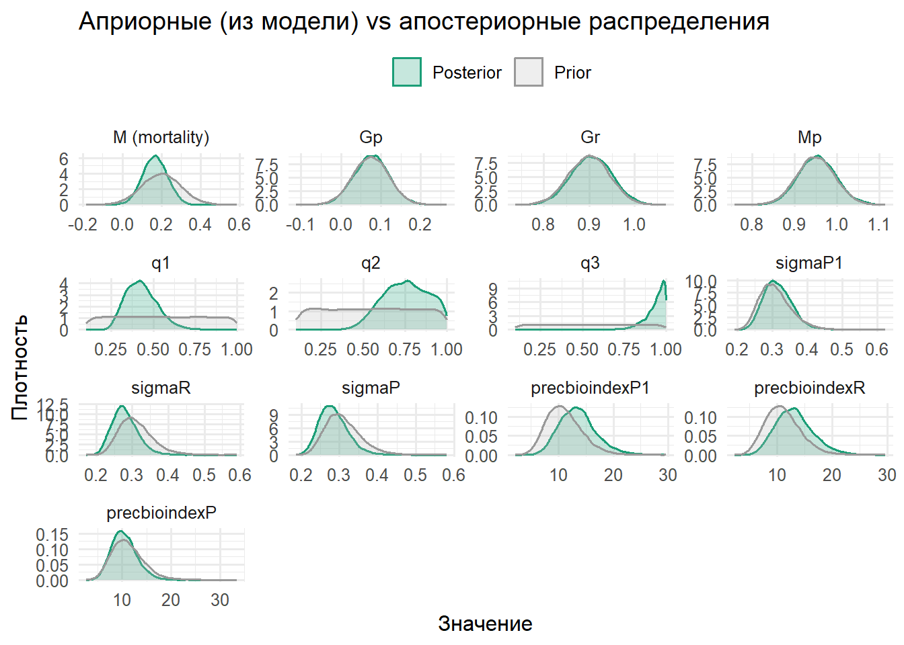
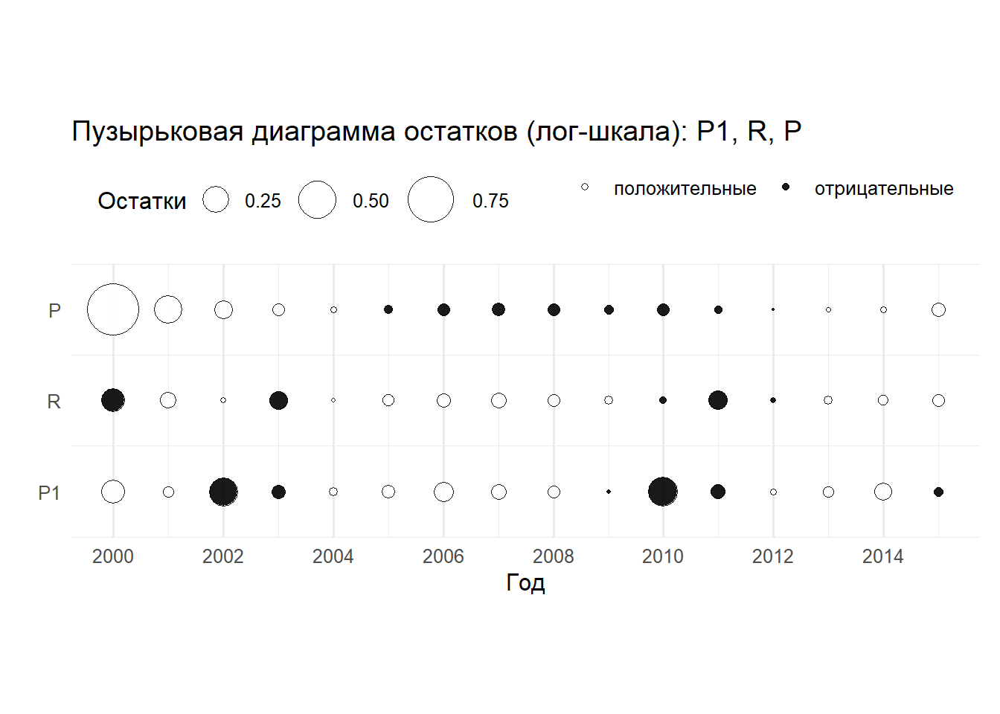
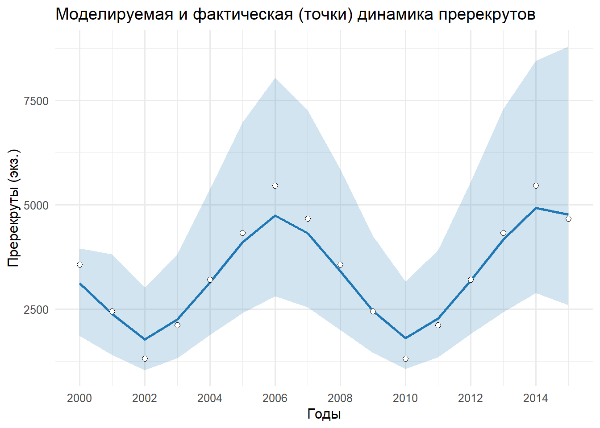
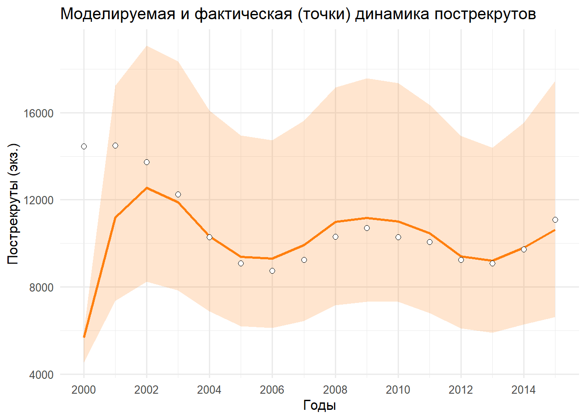

# ========================================================================================================================
# ПРАКТИЧЕСКОЕ ЗАНЯТИЕ: МОДЕЛЬ Catch-Survey Analysis (CSA) - три #категории (пререкруты (P1), рекруты (R), пострекруты (P)
# Курс: "Оценка водных биоресурсов в среде R (для начинающих)"
# Автор: Баканев С. В. Дата: 20.08.2025
# Структура:
# 1) Входные данные
# 2) Модель
# 3) Прайеры
# 4) Обучение модели
# 5) Подготовка выходных данных
# 6) Анализ результатов (визуализация априорных и апостериорных параметров;бабл-плоты остатков; динамика индексов)
# ========================================================================================================================
# Установка рабочей директории
setwd("C:/CSA")
# Подключение необходимых библиотек
# install.packages(c("rjags", "coda")) # Раскомментировать для установки
library(rjags) # Для работы с JAGSWarning: пакет 'rjags' был собран под R версии 4.5.1Загрузка требуемого пакета: codaWarning: пакет 'coda' был собран под R версии 4.5.1Linked to JAGS 4.3.1Loaded modules: basemod,bugslibrary(coda) # Для анализа MCMC-выхода
library(ggplot2) # Рисунки
# ========================================================================================================================
# --- Входные данные ---
# ========================================================================================================================
data_list <- list(
N = 16,# Количество временных точек
# Наблюдаемые данные (индексы запаса)
bioindexP1 = c(1500,1028,554,887,1345,1817,2291,1958,1500,1028,554,887,1345,1817,2291,1958),
bioindexR = c(2531,1927,1305,764,1216, 1820,2442,2983,2531,1927,1305,764,1216,1820,2442,2983),
bioindexP = c(13741,13770,13060,11653,9782,8634,8321,8793,9809,10177,9776,9566,8789,8640,9240,10547),
catch = c(6,2,6,15,21,37,37,315,945,890,991,1060,1000,1000,1600,1673,1250)
)
# Создание вектора лет для подписей
YEAR <- 2000 + 0:(data_list$N - 1)
# ========================================================================================================================
# --- Генерация модели CSA --
# ========================================================================================================================
model_string <- "
model {
# Observation model
for (i in 1:N) {
bioindexP1med[i] <- log(1.0E-6 + q1 * P1[i])
bioindexP1[i] ~ dlnorm(bioindexP1med[i], precbioindexP1)
bioindexRmed[i] <- log(1.0E-6 + q2 * R[i])
bioindexR[i] ~ dlnorm(bioindexRmed[i], precbioindexR)
bioindexPmed[i] <- log(1.0E-6 + q3 * P[i])
bioindexP[i] ~ dlnorm(bioindexPmed[i], precbioindexP)
}
# State dynamics
inv_surv <- exp(-M)
for (i in 2:N) {
tmpPraw[i] <- (P1[i-1]*Gp*Mp + R[i-1] + P[i-1] - catch[i-1]) * inv_surv
tmpPpos[i] <- tmpPraw[i] * step(tmpPraw[i])
Pmed[i] <- log(1.0E-6 + tmpPpos[i])
P[i] ~ dlnorm(Pmed[i], precP)
tmpRraw[i] <- (P1[i-1]*Gr*Mp) * inv_surv
tmpRpos[i] <- tmpRraw[i] * step(tmpRraw[i])
Rmed[i] <- log(1.0E-6 + tmpRpos[i])
R[i] ~ dlnorm(Rmed[i], precR)
P1med[i] <- log(1.0E-6 + P1[i-1])
P1[i] ~ dlnorm(P1med[i], precP1)
}
# Risk
for (i in 1:N) {
PR[i] <- P[i] + R[i]
p.PRlim[i] <- step(PRlim - PR[i])
}
PRlim <- 4000
# Priors
P1[1] ~ dunif(200,4000)
P[1] ~ dunif(200,6000)
R[1] ~ dunif(200,25000)
Gr ~ dnorm(0.9, 500)
Gp ~ dnorm(0.075,500)
Mp ~ dnorm(0.95, 500)
precbioindexP1 ~ dgamma(12.22, 1.1)
precbioindexR ~ dgamma(12.22, 1.1)
precbioindexP ~ dgamma(12.22, 1.1)
q1 ~ dunif(0.1,1)
q2 ~ dunif(0.1,1)
q3 ~ dunif(0.1,1)
precP1 ~ dgamma(12.22, 1.1)
precR ~ dgamma(12.22, 1.1)
precP ~ dgamma(12.22, 1.1)
M ~ dnorm(0.2, 100)
}
"
# ========================================================================================================================
# --- Обучение модели ---
# ========================================================================================================================
set.seed(1) # Для воспроизводимости
# Инициализация модели JAGS
jm <- jags.model(
textConnection(model_string), # Модель из строки
data = data_list, # Данные
n.chains = 3, # Количество цепей
n.adapt = 1500 # Длина адаптационной фазы
)Compiling model graph
Resolving undeclared variables
Allocating nodes
Graph information:
Observed stochastic nodes: 48
Unobserved stochastic nodes: 61
Total graph size: 576
Initializing model# Обновление модели (burn-in)
update(jm, 4000)
# Переменные для мониторинга
vars_to_monitor <- c(
"M","Gp","Gr","Mp","q1","q2","q3", # Параметры
"precP","precP1","precR","precbioindexP","precbioindexP1","precbioindexR", # Точности
"P","P1","R","PR","p.PRlim" # Состояния и производные
)
# Генерация MCMC-выборок
samps <- coda.samples(
jm,
variable.names = vars_to_monitor, # Мониторируемые переменные
n.iter = 6000, # Длина выборки
thin = 3 # Прореживание
)
# ========================================================================================================================
# --- Анализ результатов ---
# ========================================================================================================================
# Стандартная статистика по выборкам
sm <- summary(samps)
stats <- sm$statistics # Средние, SD, стандартные ошибки
quants <- sm$quantiles # Квантили (2.5%, 25%, 50%, 75%, 97.5%)
# Матрица всех сэмплов для ручных вычислений
draws_mat <- as.matrix(samps)
# Функция для расчета MC ошибки через эффективный размер выборки
mcse_from_ess <- function(vec) {
ess <- effectiveSize(as.mcmc(vec)) # Эффективный размер выборки
sd(vec) / sqrt(as.numeric(ess)) # MC ошибка
}
# Функция для создания строки результата
make_row <- function(year, mapping, node, mean, sd, mcse, q2.5, q25, q50, q75, q97.5) {
data.frame(
YEAR = year,
`#Vectors to monitor` = mapping,
node = node,
mean = mean,
sd = sd,
`MC error` = mcse,
`2.50%` = q2.5,
`25.00%` = q25,
median = q50,
`75.00%` = q75,
`97.50%` = q97.5,
check.names = FALSE
)
}
# Список для накопления результатов
rows <- list()
# Функция добавления скалярных параметров
add_scalar <- function(x_idx, vname) {
if (vname %in% rownames(stats)) {
# Если параметр есть в готовой статистике
m <- stats[vname, "Mean"]
s <- stats[vname, "SD"]
mcse <- mcse_from_ess(draws_mat[, vname])
q <- quants[vname, c("2.5%", "25%", "50%", "75%", "97.5%")]
rows[[length(rows) + 1]] <<- make_row(NA, paste0("x[", x_idx, "]<-", vname), paste0("x[", x_idx, "]"),
m, s, mcse, q[1], q[2], q[3], q[4], q[5])
} else if (vname %in% c("sigmaP1","sigmaR","sigmaP")) {
# Для стандартных отклонений (преобразуем из точности)
src <- switch(vname,
sigmaP1 = "precP1",
sigmaR = "precR",
sigmaP = "precP")
if (src %in% colnames(draws_mat)) {
vec <- sqrt(1 / draws_mat[, src]) # Преобразование precision -> sigma
m <- mean(vec); s <- sd(vec); mcse <- mcse_from_ess(vec)
q <- quantile(vec, c(0.025,0.25,0.5,0.75,0.975))
rows[[length(rows) + 1]] <<- make_row(NA, paste0("x[", x_idx, "]<-", vname), paste0("x[", x_idx, "]"),
m, s, mcse, q[1], q[2], q[3], q[4], q[5])
}
}
}
# Добавление основных параметров
add_scalar(1, "M")
add_scalar(2, "q1")
add_scalar(3, "q2")
add_scalar(4, "q3")
add_scalar(5, "sigmaP1")
add_scalar(6, "sigmaR")
add_scalar(7, "sigmaP")
add_scalar(8, "precbioindexP1")
add_scalar(9, "precbioindexR")
add_scalar(10, "precbioindexP")
add_scalar(11, "Gr")
add_scalar(12, "Gp")
add_scalar(13, "Mp")
# Функция добавления временных рядов
add_series <- function(base_idx, varname, years) {
for (i in seq_along(years)) {
rn <- paste0(varname, "[", i, "]") # Имя переменной с индексом
if (!rn %in% rownames(stats)) next # Пропуск если нет данных
m <- stats[rn, "Mean"]
s <- stats[rn, "SD"]
mcse <- mcse_from_ess(draws_mat[, rn])
q <- quants[rn, c("2.5%", "25%", "50%", "75%", "97.5%")]
xi <- base_idx + (i - 1) # Вычисление индекса в выходной таблице
rows[[length(rows) + 1]] <<- make_row(years[i], paste0("x[", xi, "]<-", rn), paste0("x[", xi, "]"),
m, s, mcse, q[1], q[2], q[3], q[4], q[5])
}
}
# Добавление временных рядов
add_series(100, "P1", YEAR)
add_series(200, "R", YEAR)
add_series(300, "P", YEAR)
# Создание итоговой таблицы
out_df <- do.call(rbind, rows)
# Создание групп для сортировки
out_df$group <- ifelse(is.na(out_df$YEAR), "param",
ifelse(grepl("<-P1\\[", out_df$`#Vectors to monitor`), "P1",
ifelse(grepl("<-R\\[", out_df$`#Vectors to monitor`), "R", "P")))
# Сортировка параметров по индексу
param_rows <- out_df[out_df$group == "param", ]
param_idx <- as.numeric(sub(".*\\[(\\d+)\\].*", "\\1", param_rows$node))
param_rows <- param_rows[order(param_idx), ]
# Сортировка временных рядов по году
p1_rows <- out_df[out_df$group == "P1", ]
p1_rows <- p1_rows[order(p1_rows$YEAR), ]
r_rows <- out_df[out_df$group == "R", ]
r_rows <- r_rows[order(r_rows$YEAR), ]
p_rows <- out_df[out_df$group == "P", ]
p_rows <- p_rows[order(p_rows$YEAR), ]
# Компоновка финальной таблицы
out_df <- rbind(param_rows, p1_rows, r_rows, p_rows)
out_df$group <- NULL # Удаление вспомогательной колонки
# Сохранение результатов
write.csv(out_df, "monitor_summary.csv", row.names = FALSE)
cat("Saved: monitor_summary.csv\n")Saved: monitor_summary.csv# Вывод структуры результатов
str(out_df)'data.frame': 61 obs. of 11 variables:
$ YEAR : num NA NA NA NA NA NA NA NA NA NA ...
$ #Vectors to monitor: chr "x[1]<-M" "x[2]<-q1" "x[3]<-q2" "x[4]<-q3" ...
$ node : chr "x[1]" "x[2]" "x[3]" "x[4]" ...
$ mean : num 0.175 0.414 0.735 0.935 0.315 ...
$ sd : num 0.0642 0.0912 0.1343 0.0602 0.0417 ...
$ MC error : num 0.002072 0.006449 0.008274 0.001534 0.000584 ...
$ 2.50% : num 0.0483 0.2653 0.4895 0.7802 0.2451 ...
$ 25.00% : num 0.131 0.347 0.633 0.909 0.285 ...
$ median : num 0.174 0.403 0.731 0.953 0.311 ...
$ 75.00% : num 0.218 0.468 0.839 0.98 0.34 ...
$ 97.50% : num 0.299 0.621 0.978 0.998 0.409 ...# ========================================================================================================================
# Визуализация априорных и апостериорных параметров
# Параметры: M, Gp, Gr, Mp, q1, q2, q3, precP1, precR, precP, precbioindexP1, precbioindexR, precbioindexP
# И производные: sigmaP1, sigmaR, sigmaP
# ========================================================================================================================
# Сэмплируем приоры прямо из той же JAGS-модели (без данных)
sample_priors_from_model <- function(model_string, n_iter = 20000, n_adapt = 500) {
jm_prior <- jags.model(textConnection(model_string), data = list(N = 0), n.chains = 1, n.adapt = n_adapt)
vars <- c("M","Gp","Gr","Mp","q1","q2","q3",
"precP1","precR","precP","precbioindexP1","precbioindexR","precbioindexP")
priors <- coda.samples(jm_prior, variable.names = vars, n.iter = n_iter)
as.matrix(priors)
}
# Получаем матрицы приоров и постериоров
prior_mat <- sample_priors_from_model(model_string, n_iter = 20000, n_adapt = 500)Compiling model graph
Resolving undeclared variables
Allocating nodes
Graph information:
Observed stochastic nodes: 0
Unobserved stochastic nodes: 16
Total graph size: 33
Initializing modelpost_mat <- as.matrix(samps)
# Добавляем производные сигмы из прецизионов
add_sigmas <- function(mat) {
add <- function(dst, src) {
if (all(src %in% colnames(mat))) dst <- cbind(dst, setNames(as.data.frame(sqrt(1/mat[, src, drop=FALSE])), gsub("^prec","sigma", src)))
dst
}
out <- mat
out <- add(out, c("precP1"))
out <- add(out, c("precR"))
out <- add(out, c("precP"))
out
}
prior_mat <- add_sigmas(prior_mat)
post_mat <- add_sigmas(post_mat)
# Список параметров для визуализации
params <- intersect(
c("M","Gp","Gr","Mp","q1","q2","q3",
"sigmaP1","sigmaR","sigmaP",
"precbioindexP1","precbioindexR","precbioindexP"),
union(colnames(prior_mat), colnames(post_mat))
)
# В long-формат
mk_df <- function(mat, label) {
if (is.null(mat) || nrow(mat) == 0) return(data.frame())
mat <- mat[, intersect(colnames(mat), params), drop = FALSE]
reshape(
data.frame(iter = seq_len(nrow(mat)), mat, check.names = FALSE),
direction = "long", varying = params, v.names = "value", timevar = "param", times = params
)[, c("param","value")]
}
prior_df <- mk_df(prior_mat, "Prior"); prior_df$dist <- "Prior"
post_df <- mk_df(post_mat, "Posterior"); post_df$dist <- "Posterior"
plot_df <- rbind(prior_df, post_df)
# Подписи
param_labels <- c(
M="M (mortality)", Gp="Gp", Gr="Gr", Mp="Mp",
q1="q1", q2="q2", q3="q3",
sigmaP1="sigmaP1", sigmaR="sigmaR", sigmaP="sigmaP",
precbioindexP1="precbioindexP1", precbioindexR="precbioindexR", precbioindexP="precbioindexP"
)
plot_df$param_f <- factor(plot_df$param, levels = params, labels = unname(param_labels[params]))
# График prior vs posterior (берёт priors из модели!)
library(ggplot2)
ggplot(plot_df, aes(x = value, color = dist, fill = dist)) +
geom_density(alpha = 0.25, linewidth = 0.7) +
facet_wrap(~ param_f, scales = "free", ncol = 4) +
scale_color_manual(values = c("Prior" = "#999999", "Posterior" = "#1b9e77")) +
scale_fill_manual(values = c("Prior" = "#bbbbbb", "Posterior" = "#1b9e77")) +
labs(title = "Априорные (из модели) vs апостериорные распределения",
x = "Значение", y = "Плотность", color = "", fill = "") +
theme_minimal(base_size = 12) +
theme(legend.position = "top")
# ========================================================================================================================
# Бабл-плоты остатков P1, R, P по годам (2000–2015)
# Требуется: объекты samps, data_list. Если YEAR не создан, создадим.
# ========================================================================================================================
if (!exists("YEAR")) YEAR <- 2000 + 0:(data_list$N - 1)
draws_mat <- as.matrix(samps)
eps <- 1.0e-6
resid_bubble_summary <- function(series, obs_vec, q_name, state_name_prefix) {
rows <- list()
for (i in seq_along(obs_vec)) {
if (is.na(obs_vec[i])) next
q_draws <- draws_mat[, q_name]
state_draws <- draws_mat[, paste0(state_name_prefix, "[", i, "]")]
# residual per draw: log(observed) - log(expected)
res_draws <- log(obs_vec[i]) - log(eps + q_draws * state_draws)
r_mean <- mean(res_draws, na.rm = TRUE)
rows[[length(rows) + 1]] <- data.frame(
YEAR = YEAR[i],
series = series,
resid = r_mean,
abs_resid = abs(r_mean),
sign = ifelse(r_mean >= 0, "pos", "neg")
)
}
do.call(rbind, rows)
}
b1 <- resid_bubble_summary("P1", data_list$bioindexP1, "q1", "P1")
b2 <- resid_bubble_summary("R", data_list$bioindexR, "q2", "R")
b3 <- resid_bubble_summary("P", data_list$bioindexP, "q3", "P")
bubbles <- rbind(b1, b2, b3)
# Порядок рядов сверху вниз: P1, R, P
bubbles$series <- factor(bubbles$series, levels = c("P1", "R", "P"))
# Убираем пустое расстояние - используем минимальные интервалы
lvl <- c("P1","R","P")
y_map <- setNames(c(1, 2, 3), lvl) # Числовые позиции без больших промежутков
bubbles$y_pos <- unname(y_map[as.character(bubbles$series)])
# Создаем вытянутый прямоугольный график
ggplot(bubbles, aes(x = YEAR, y = y_pos)) +
geom_point(aes(size = abs_resid, fill = sign), shape = 21, color = "black", alpha = 0.9) +
scale_fill_manual(values = c(neg = "black", pos = "white"),
breaks = c("pos","neg"),
labels = c("положительные","отрицательные"),
name = "") +
scale_size_area(max_size = 12, name = "Остатки") +
scale_x_continuous(breaks = seq(2000, 2015, by = 2), limits = c(2000, 2015)) +
scale_y_continuous(breaks = unname(y_map),
labels = names(y_map),
limits = c(0.5, 3.5), # Убираем пустое пространство сверху и снизу
expand = c(0, 0)) + # Убираем расширение осей
labs(title = "Пузырьковая диаграмма остатков (лог-шкала): P1, R, P",
x = "Год",
y = "") +
theme_minimal(base_size = 12) +
theme(
legend.position = "top",
panel.grid.major.y = element_blank(),
axis.ticks.y = element_blank(),
aspect.ratio = 0.3, # Делаем график вытянутым прямоугольником (ширина > высоты)
plot.margin = margin(5, 10, 5, 5, "pt") # Убираем лишние отступы вокруг графика
)
# ========================================================================================================================
# ДИНАМИКА ИНДЕКСОВ (ПРЕРЕКРУТЫ, РЕКРУТЫ, ПОСТРЕКРУТЫ) МОДЕЛЬНЫХ И ФАКТИЧЕСКИХ (ТОЧКИ)
# ========================================================================================================================
# Три графика динамики P1, R, P: медиана (линия), 95% ДИ (лента), точки — наблюдения,
# приведённые к единому масштабу делением на медиану q (Posterior median).
# ========================================================================================================================
if (!exists("YEAR")) YEAR <- 2000 + 0:(data_list$N - 1)
draws_mat <- as.matrix(samps)
series_summary <- function(varname, obs_vec, qname, series_label) {
med_q <- median(draws_mat[, qname], na.rm = TRUE)
rows <- vector("list", length(obs_vec))
for (i in seq_along(obs_vec)) {
rn <- paste0(varname, "[", i, "]")
if (!rn %in% colnames(draws_mat)) next
v <- draws_mat[, rn]
qs <- quantile(v, c(0.025, 0.5, 0.975), na.rm = TRUE)
obs_state <- if (!is.na(obs_vec[i])) obs_vec[i] / med_q else NA_real_
rows[[i]] <- data.frame(
YEAR = YEAR[i],
series = series_label,
median = qs[2],
lo = qs[1],
hi = qs[3],
obs = obs_state
)
}
do.call(rbind, rows)
}
df_p1 <- series_summary("P1", data_list$bioindexP1, "q1", "P1")
df_r <- series_summary("R", data_list$bioindexR, "q2", "R")
df_p <- series_summary("P", data_list$bioindexP, "q3", "P")
p_P1 <- ggplot(df_p1, aes(x = YEAR)) +
geom_ribbon(aes(ymin = lo, ymax = hi), fill = "#1f77b4", alpha = 0.2) +
geom_line(aes(y = median), color = "#1f77b4", linewidth = 1) +
geom_point(aes(y = obs), shape = 21, size = 2, color = "black", fill = "white", na.rm = TRUE) +
scale_x_continuous(breaks = seq(2000, 2015, by = 2), limits = c(2000, 2015)) +
labs(title = "Моделируемая и фактическая (точки) динамика пререкрутов", x = "Годы", y = "Пререкруты (экз.)") +
theme_minimal(base_size = 12)
print(p_P1)
p_R <- ggplot(df_r, aes(x = YEAR)) +
geom_ribbon(aes(ymin = lo, ymax = hi), fill = "#2ca02c", alpha = 0.2) +
geom_line(aes(y = median), color = "#2ca02c", linewidth = 1) +
geom_point(aes(y = obs), shape = 21, size = 2, color = "black", fill = "white", na.rm = TRUE) +
scale_x_continuous(breaks = seq(2000, 2015, by = 2), limits = c(2000, 2015)) +
labs(title = "Моделируемая и фактическая (точки) динамика рекрутов", x = "Годы", y = "Рекруты (экз.)") +
theme_minimal(base_size = 12)
print(p_R)
p_P <- ggplot(df_p, aes(x = YEAR)) +
geom_ribbon(aes(ymin = lo, ymax = hi), fill = "#ff7f0e", alpha = 0.2) +
geom_line(aes(y = median), color = "#ff7f0e", linewidth = 1) +
geom_point(aes(y = obs), shape = 21, size = 2, color = "black", fill = "white", na.rm = TRUE) +
scale_x_continuous(breaks = seq(2000, 2015, by = 2), limits = c(2000, 2015)) +
labs(title = "Моделируемая и фактическая (точки) динамика пострекрутов", x = "Годы", y = "Пострекруты (экз.)") +
theme_minimal(base_size = 12)
print(p_P)